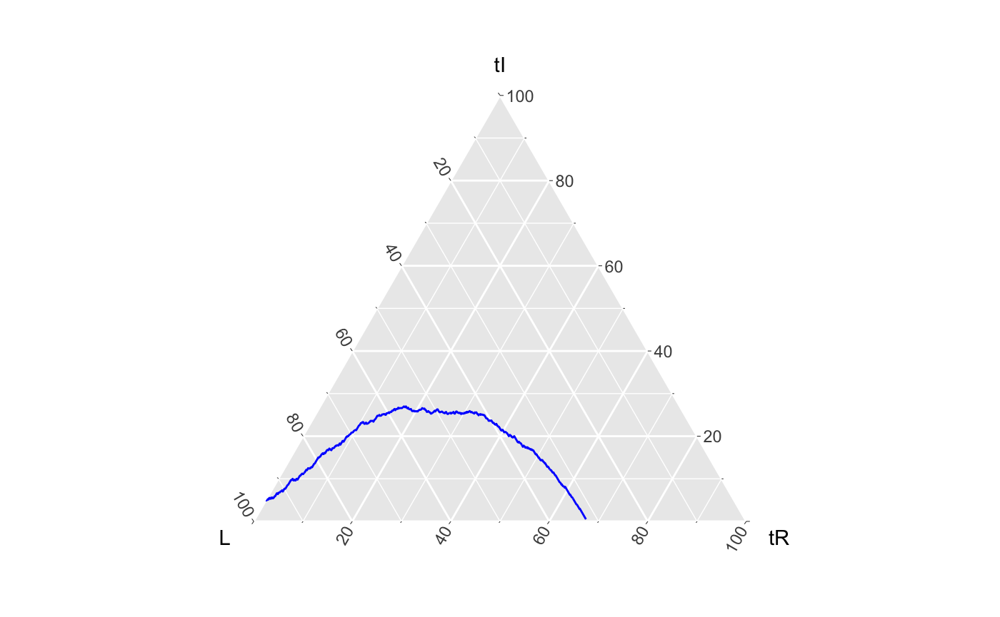
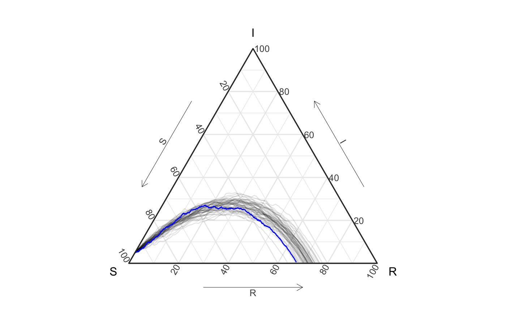
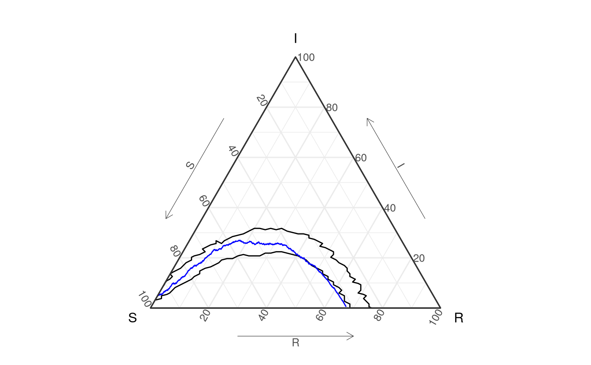
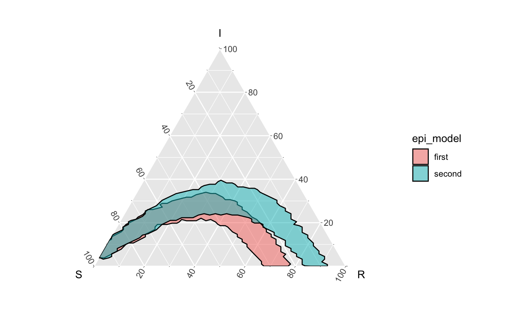

vignettes/not-built-vignettes/comparing-bands-and-assessing-containment.Rmd
comparing-bands-and-assessing-containment.Rmdif(!require(EpiCompare)){ library(devtools) devtools::install_github("skgallagher/EpiCompare") } library(EpiCompare) library(dplyr) library(tidyr) library(ggplot2) theme_set(theme_sir())
This package provides you the ability to create bands that are high dimensional (say beyond a 3d simplex). It also allows for you to compare bands (using Haussdorff distance) and examine containment of curves.
To motivate these tools we’re actually going to use a with a SIR example (maybe elsewhere do a full high-d example?). Below we’ve generated a pretend_actual_data-set and a set of simulations.
Look at this beautify pretend data. A good peak. We’re able to use geom_aggregate on our data (though we also could have used agents_to_aggregate + geom_path).
set.seed(1) pretend_actual_data <- EpiCompare::simulate_SIR_agents( n_sims = 1, n_time_steps = 1000, beta = .0099, gamma = .0029, init_SIR = c(950, 50, 0)) pretend_actual_data %>% ggplot() + geom_aggregate(aes(y = tI, z = tR), color = "blue") + coord_tern() #> Coordinate system already present. Adding new coordinate system, which will replace the existing one.

# another approach for the same visual df_single <- pretend_actual_data %>% agents_to_aggregate(states = c("tI", "tR")) %>% rename(S = "X0", I = "X1", R = "X2")
# visual not run... ggplot(df_single, aes(x = S, y = I, z = R)) + geom_path(color = "blue") + coord_tern() + theme_sir()
Now, suppose, without having read our paper, you don’t have a proof of @Shannon’s at the top of your head, but you still think the following model fits decently well for the above data.
n_sims <- 50 n_time_steps <- 100 beta <- .1 gamma <- .03 init_SIR <- c(950, 50, 0) sim50 <- simulate_SIR_agents(n_sims = n_sims, n_time_steps = n_time_steps, beta = beta, gamma = gamma, init_SIR = init_SIR) df_group <- sim50 %>% group_by(sim) %>% agents_to_aggregate(states = c("tI", "tR")) %>% #min_max_time = c(0,100)) %>% rename(S = "X0", I = "X1", R = "X2")
ggplot() + geom_aggregate(data = sim50, aes(y = tI, z = tR, group = sim), alpha = .1) + geom_aggregate(data = pretend_actual_data, aes(y = tI, z = tR), color = "blue") + coord_tern() + labs(x = "S", y = "I", z = "R") #> Coordinate system already present. Adding new coordinate system, which will replace the existing one.

# again, aggregate version (visual not run): ggplot(df_group) + geom_path(aes(x = S, y = I, z = R, group = sim), alpha = .1) + geom_path(data = df_single, aes(x = S, y = I, z = R), color = "blue") + coord_tern() + labs(x = "S", y = "I", z = "R")
Great! The visualization looks like you made a good estimate of the SIR model parameters. But how good? Would a 60% prediction interval contain the true epidemic?
We propose to assess this question with containment of the epidemic with a band using 60% of the simulations - specifically the top 60% most globally deep filaments of simulations. (since this looks like a ‘single mode’ style distribution - global depth isn’t that bad.)
We define:
delta_ball_cb <- df_group %>% arrange(t) %>% # just to be safe select(-t) %>% group_by(sim) %>% grab_top_depth_filaments(conf_level = .6) %>% create_delta_ball_structure()
Which is just a data version (not exactly, but close) to this:
ggplot() + geom_prediction_band(data = df_group, aes(x = S, y = I, z = R, sim_group = as.numeric(sim)), conf_level = .6, pb_type = "delta_ball", grid_size = rep(50,2)) + geom_path(data = df_single, aes(x = S, y = I, z = R), color = "blue") + coord_tern() #> Warning: Ignoring unknown aesthetics: z #> Coordinate system already present. Adding new coordinate system, which will replace the existing one.

Is it contained in the above delta ball?
What about a less strigent ruling (maybe a normal prediction band with 90% confidence)?
delta_ball_cb1 <- df_group %>% arrange(t) %>% # just to be safe select(-t) %>% group_by(sim) %>% grab_top_depth_filaments(conf_level = .9) %>% create_delta_ball_structure()
Suppose your lab has seen an epidemic that has similar characteristics as the current epidemic, and had already build simulations below for such thing:
beta <- .15 gamma <- .05 sim50_2 <- simulate_SIR_agents(n_sims = 50, n_time_steps = 100, beta = beta, gamma = gamma, init_SIR = c(950, 50, 0)) df_group2 <- sim50_2 %>% group_by(sim) %>% agents_to_aggregate(states = c("tI", "tR")) %>% rename(S = "X0", I = "X1", R = "X2")
df_all <- rbind( df_group %>% ungroup() %>% mutate(sim = as.character(sim), epi_model = "first"), df_group2 %>% ungroup() %>% mutate(sim = as.character(sim), epi_model = "second")) ggplot() + geom_prediction_band(data = df_all, aes(x = S, y = I, z = R, fill = epi_model, sim_group = as.numeric(sim)), alpha = .5, conf_level = .9, pb_type = "delta_ball", grid_size = rep(50, 2)) + coord_tern() #> Coordinate system already present. Adding new coordinate system, which will replace the existing one.

# visual not run ggplot() + geom_prediction_band(data = df_group, aes(x = S, y = I, z = R, sim_group = as.numeric(sim)), color = "blue", fill = "blue", alpha = .5, conf_level = .9, pb_type = "delta_ball", grid_size = rep(50, 2)) + geom_prediction_band(data = df_group2, aes(x = S, y = I, z = R, sim_group = as.numeric(sim)), color = "red", fill = "red", alpha = .5, conf_level = .9, pb_type = "delta_ball", grid_size = rep(50, 2)) + coord_tern()
# visual not run df_all <- rbind(df_group %>% ungroup() %>% mutate(sim = as.numeric(as.character(sim)), epi_model = "first"), df_group2 %>% ungroup() %>% mutate(sim = as.numeric(as.character(sim)), epi_model = "second")) ggplot() + geom_path(data = df_all, aes(x = S, y = I, z = R, color = epi_model, group = factor(paste(epi_model,sim))), alpha = .1) + coord_tern()
# this would also work (and is not run) df_all_agg <- rbind(sim50 %>% mutate(epi_model = "first"), sim50_2 %>% mutate(epi_model = "second")) ggplot() + geom_aggregate(data = df_all_agg, aes(y = tI, z = tR, color = epi_model, group = factor(paste(epi_model,sim))), alpha = .1) + coord_tern() + labs(x = "S", y = "I", z = "R")
Above we saw how to compare a epidemic to a model (through simulations), and how to visually compare simulations in a time-free manner. Naturally, we can also compare models (and the geometric prediction bands they generate), though geometric summary statistics.
We provide one such metric, the Hausdorff Distance, which defines the distance between sets (but the minimum distance that each set must expand to cover the other set). Specifically hausdorff_dist() can calculate this distance between delta_ball and convex_hull based prediction bands (with classes delta_ball_structure and convex_hull_structure respectively.
delta_ball_cb_group2 <- df_group2 %>% arrange(t) %>% # just to be safe select(-t) %>% group_by(sim) %>% grab_top_depth_filaments(conf_level = .9) %>% create_delta_ball_structure()
hausdorff_dist(delta_ball_cb1, delta_ball_cb_group2) #> [1] 0.2294748